カチマケ
パチンコ・競馬などの収支管理(18歳以上)
使った額と戻った額を入れるだけで、月の収支・回収率・時給がまとめて見られます。
- パチンコ・スロット・競馬・競輪・ボート・オートを、ひとつのカレンダーに記入
- 「前回と同じ」で店や機種もそのまま入る。貯玉はレートと玉数で円に直す
- 月の負けの上限を決めておくと、近づいたときにホームでお知らせ
いまは Android 版だけです。記入した収支はスマホの中だけに残り、サーバーには送りません。
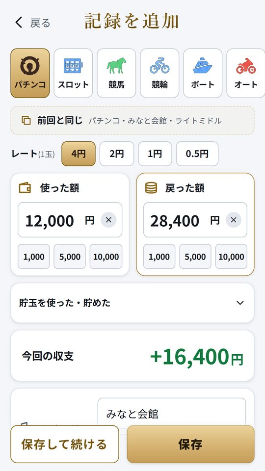
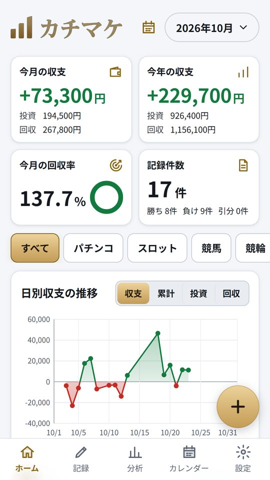

作業や勉強の記録、国家試験の過去問、毎日のちょっとした道具が中心です。どれもアカウント登録なしで使えます。ブラウザで遊べるゲーム「らくがき運動会」「ハルの冒険」もあります。Google Play では収支管理の「カチマケ」、iPhone では国試の過去問アプリ「ニガテ帳」を公開しています。ほかの Android 版はテスト中のものが多く、テスターを募集しています。
アプリへ飛ぶ
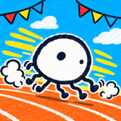
らくがき運動会描いてかけっこ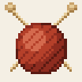
てくあみ歩いて編む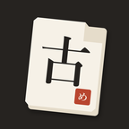
こぶんめくり古文単語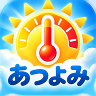
あつよみ暑さ指数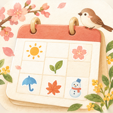
ひよりごよみカレンダー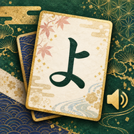
よみふだ百人一首の読み上げGoogle Play と App Store から、そのまま入れられます。
パチンコ・競馬などの収支管理(18歳以上)
使った額と戻った額を入れるだけで、月の収支・回収率・時給がまとめて見られます。
いまは Android 版だけです。記入した収支はスマホの中だけに残り、サーバーには送りません。


国家試験の過去問(介護福祉士・社会福祉士・精神保健福祉士・管理栄養士・理学療法士・臨床検査技師)
間違えた問題だけが残って、2回続けて正解すると消える問題集です。
Android はテスト中です(先に テスター用のグループ へ): ニガテ帳・介護福祉士・臨床検査技師
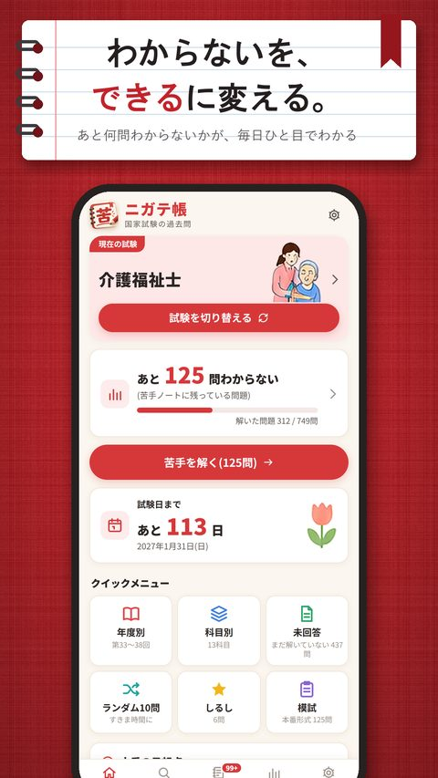
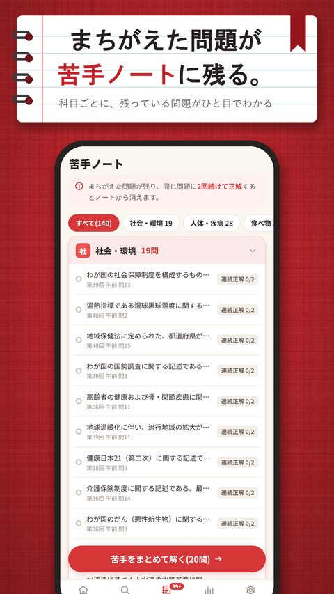
ここから下は Android 版をテストしているものです。ブラウザで試せるものもあります。
描いた絵が走るかけっこ(ブラウザゲーム)
指で描いた生き物が、
そのままかけっこに出る。
生き物を1匹描くと、その形のとおりに走りだして運動会のかけっこに出ます。どう描けば速いのかは、走らせて確かめてください。
実況・配信・動画投稿は自由です(収益化もOK・連絡不要)。利用規約・配信について · プライバシーポリシー
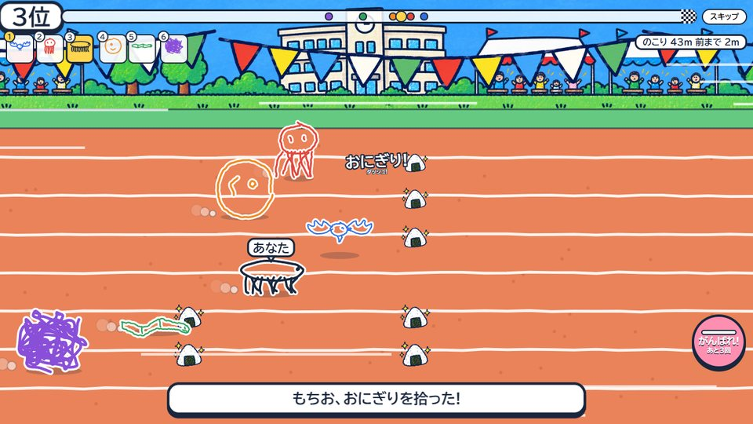
横スクロールのアクションゲーム
剣とジャンプで、
ほしのかけらを集める旅。
ハルが剣を手に、草原やほらあな、ほのおの山、そらの島を進みます。ワールドマップで道を選んで、とりでやおばけやしき、ボスのしろにも入れます。まだ作りかけで、遊んでくれた人の声を聞きながら直しています。
Android 版はテスト中です。先に テスター用のグループ に入ってから、ボタンを押してください。
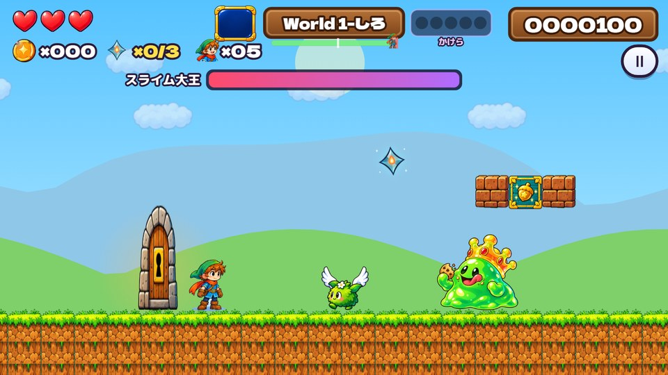
画面とアイコンを作り直しました。Android はテストに参加すると、いまの版をそのまま使えます。
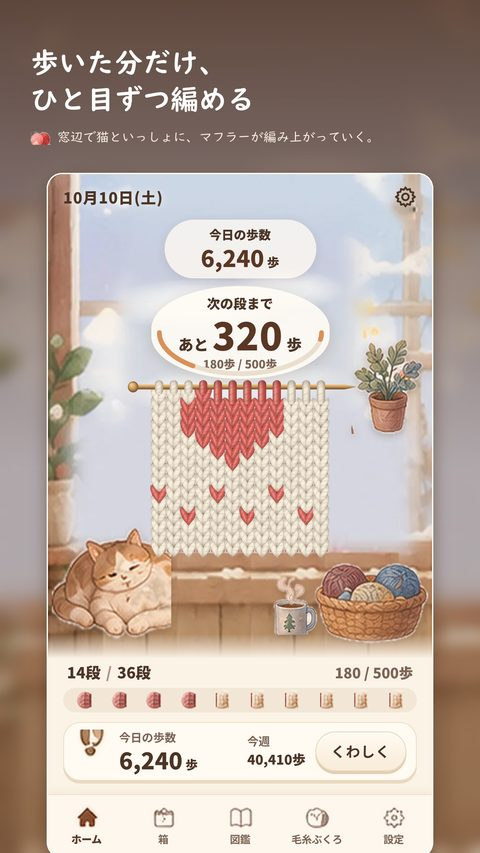
歩いて編む歩数計
歩いた分だけ、マフラーがひと目ずつ編み上がります。模様は編み上がるまで秘密です。
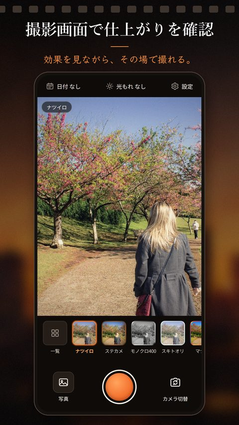
フィルムカメラ風・日付入り
フィルムや使い捨てカメラの色で撮れるカメラ。仕上がりを見ながら撮れます。
賞味期限と冷蔵庫の管理
よく買う食材はワンタップで登録。期限の近い順に並んで、色の札でひと目でわかります。
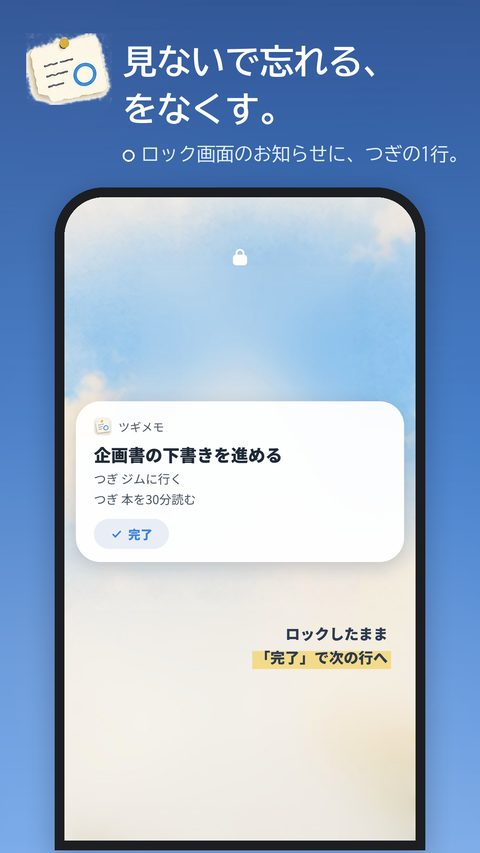
ロック画面のメモ・ToDo
つぎにやる1行だけを、ロック画面のお知らせに出しておくメモです。
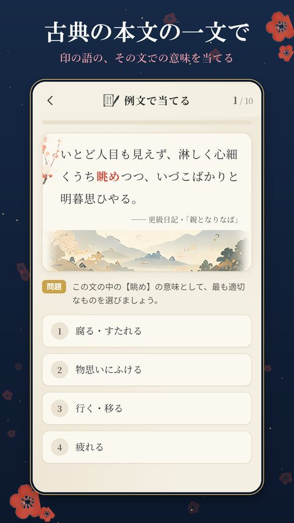
古文単語601語・例文つき
大学受験の古文単語を、源氏物語や徒然草の一文で覚える単語帳です。
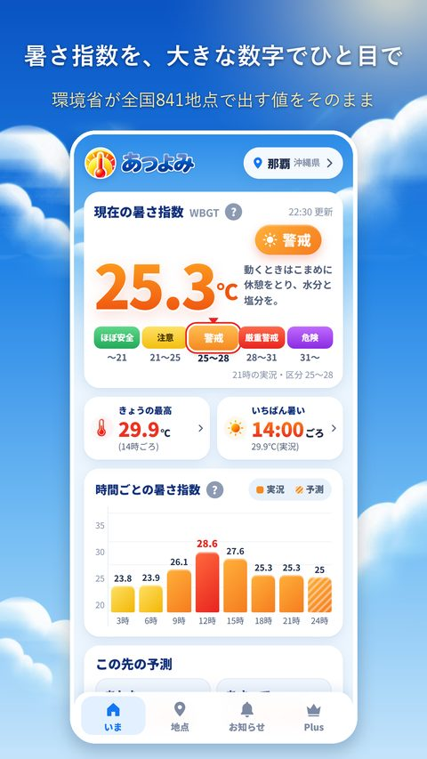
暑さ指数と熱中症アラート
暑さ指数を大きな数字と色で。環境省のデータ提供が始まる春から数字が出ます。
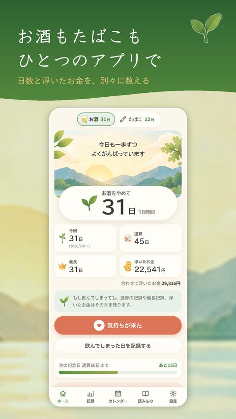
禁酒・禁煙カウンター
お酒とたばこ、やめた日数と浮いたお金を別々に数えます。禁煙だけの版はこちらからテストに参加できます。
スタンプで貼るカレンダー
スタンプを選んで日付を押すだけ。シフトや給料日、通院の日に。六曜と祝日つき。
Android のテストを始めたところです。iPhone 版はまだありません。ブラウザで試せるものもあります。
日本語を学ぶ人向け(英語の画面)
コンビニや電車、ラーメン屋で実際に言われる日本語と、その返し方を覚えるアプリです。かなと JLPT の単語も1日5分ずつ。
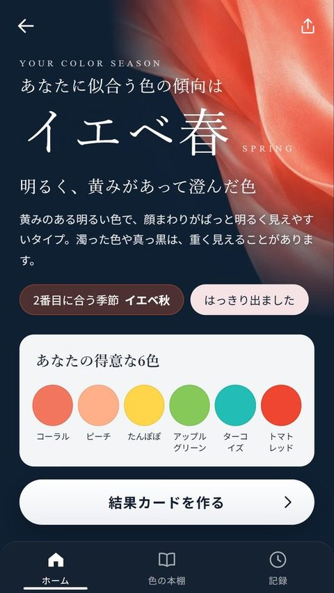
似合う色を布で見比べる
顔のまわりに4つの季節の色の布を当てて、自分の目で見比べます。白い紙で部屋の明かりの色を合わせてから比べます。写真は端末の外へ送りません。
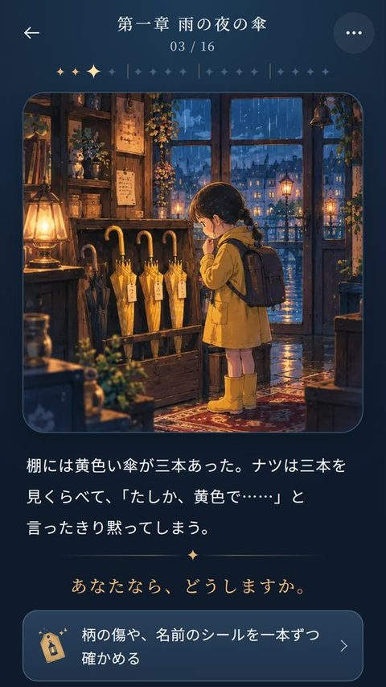
物語でわかる16の品
夜だけひらく忘れ物の店で、一晩だけ係をする物語です。選んだことから、夜明けにあなたに似た品がひとつ見つかります。
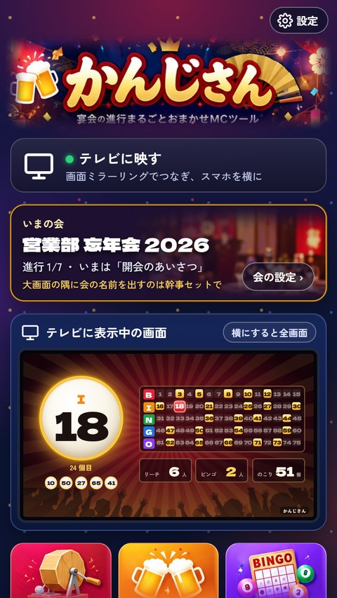
宴会ビンゴ・景品くじ・席決め
ビンゴの抽選、景品くじ、席決め、乾杯のカウントダウンを、テレビに映して進める幹事のアプリです。スマホを横にすると大画面の表示になります。
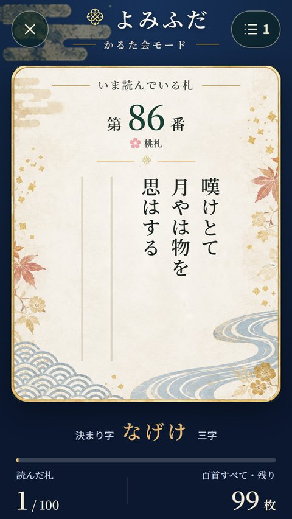
百人一首の読み上げ
百人一首の読み手をスマホがつとめます。上の句から下の句まで間をおいて読み、五色百人一首の色で札を選べます。速さ・間・下の句の回数も変えられます。
先に テスター用のグループ に入ってから、ボタンを押してください。
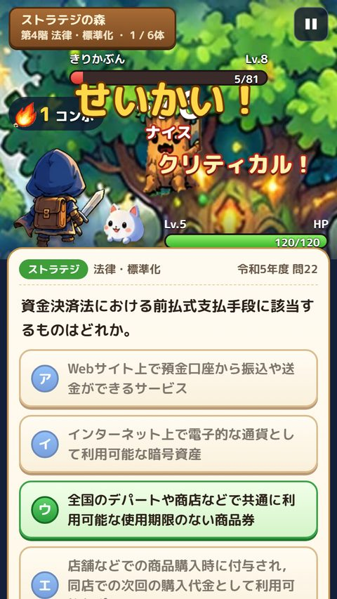
ITパスポートの過去問ダンジョン
過去問の4択に正解するとモンスターに攻撃が当たります。まちがえた問題は苦手に残ってまた出てきます。
ハムスターと作業・勉強の記録
がんばった時間が、
こんぺいとうになってたまる。
「はじめる」を押すと、となりでハムスターがこんぺいとうを磨きはじめます。10分ごとに1粒、びんの中へころんと落ちます。
先に テスター用のグループ に入ってから、ボタンを押してください。
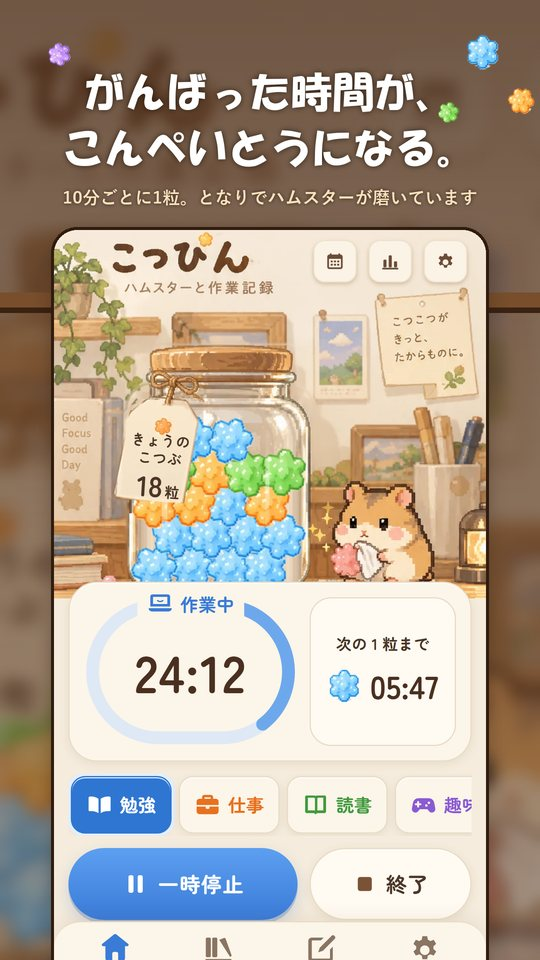
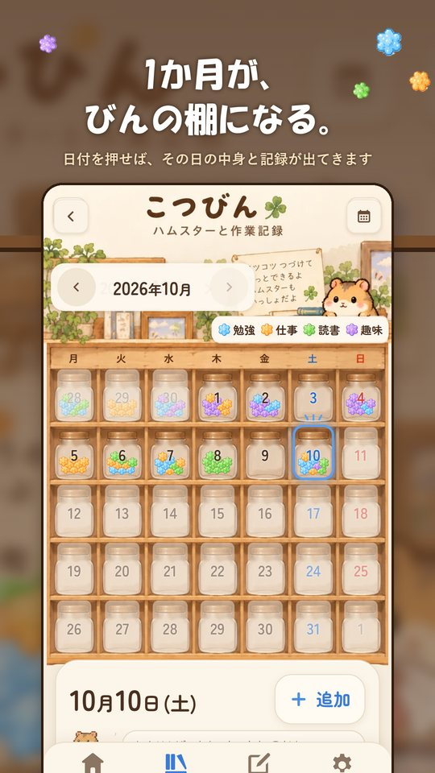
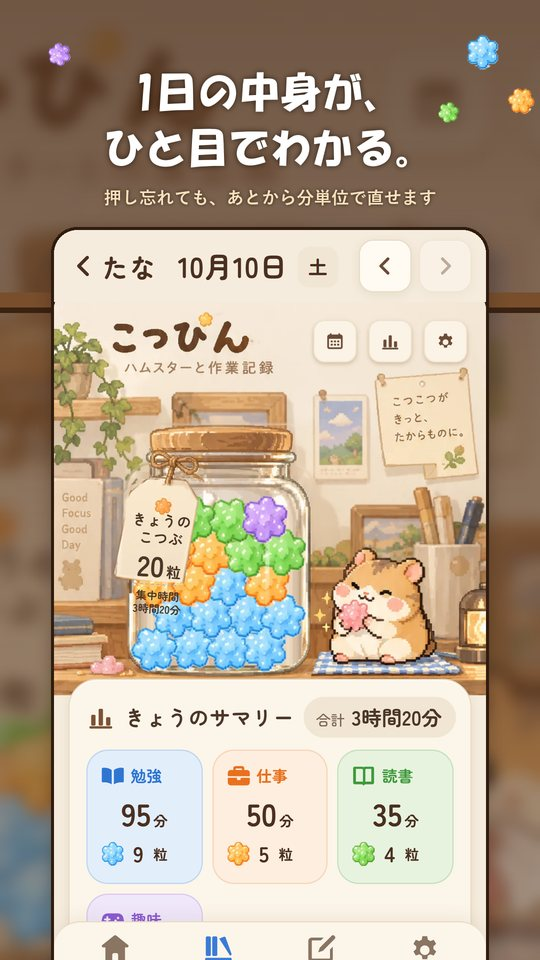
野球シミュレーション
選手を集めて、育てて、打線を組んで、弱小チームから優勝を目指します。
75歳からの認知機能検査の練習
運転免許の更新で受ける認知機能検査の流れを、前もって家で試しておく練習アプリです。
うちわ文字・ファンサうちわ作成
推しの名前を入れるだけで、うちわ文字を原寸で作れます。
広告
Google Play で一般公開するには、12人に14日間入れておいてもらうテストが必要です。入れて置いておくだけで助かります。相互テストも歓迎です。
ハルの冒険ほか6本のテスター募集の記事 / 開発日記の記事一覧